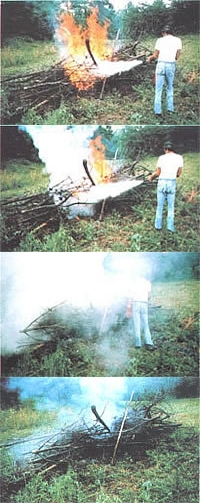
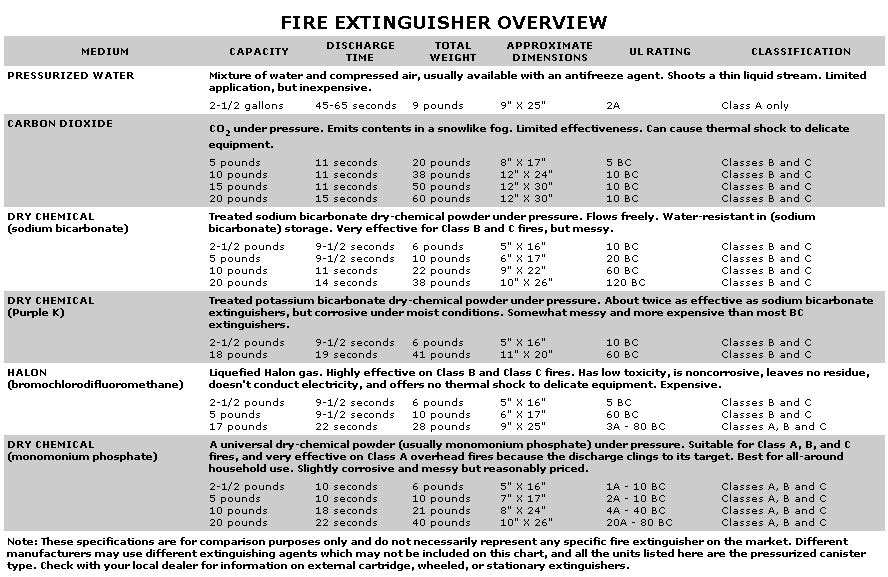

Would you be prepared if a fire broke out in your home this evening? Unfortunately, you probably wouldn't . . . because it's estimated that some 90% of America's households have only the bare-bones minimum (that is, a supply of water and a garden hose) with which to combat a residential conflagration.
Of course, it's never a good idea to try to fight a blaze without calling the fire department. But whatever you can do to extinguish, knock down, or even contain a small fire before it gets out of control (and while you're waiting for the pros to arrive) might mean the difference between minor smoke damage and the loss of your home.
And the best way to protect your dwelling (and yourself) is to expect a fire to occur . . . and to equip your home to a level of defense that's both within your budget and effective enough to do some actual good should the need arise.
Naturally, having fire protection equipment on hand is no justification for inviting an accident to occur in your dwelling . . . and taking such simple steps as not overloading electrical circuits, keeping work areas clean and free of oily rags, storing flammables in approved containers, and flipping off circuit breakers before vacating the house will greatly reduce the chance that an unexpected blaze will ever occur. (As a second line of defense, smoke alarms - either the 110-volt or the battery-operated kind - can alert you and your family to danger before the situation becomes life-threatening.)
However, even if you take every sensible precaution against the common troublemakers, fire could still strike your home. Ideally, therefore - in case the worst should happen - you'll have the right equipment on hand and know how to operate it.
WHAT ARE YOU BUYING?
The fire extinguisher field is often somewhat confusing to individuals who aren't familiar with such devices. To begin with, the units are classed according to the types of conflagrations they're designed to handle. There are four basic kinds of fires, each of which depends upon a different material for its fuel source and each of which is designated - for convenience - by a letter.
A: ordinary combustibles... including wood, cloth, paper, rubbish, and plastics.
B: flammable liquids. . . such as paint, grease, oil, gasoline, or certain solvents.
C: electrical equipment. . . a category that includes wiring, motors, control panels, and electrical components.
D: burnable metals and metaloids. . . comprising materials which, for the most part, are found only in industrial applications.
Of course, since most of us are primarily concerned with residential protection, we can pretty much ignore the D category fire (it would require a special extinguisher). The other three classes, however, can all pose threats to your household. Take a look around . . . both to see how much potential fuel exists and to note where it's concentrated. Chances are you'll find Class A material just about everywhere, and small amounts of B and C fuels concentrated in specific locations (in your garage or workshop, at the electrical service entrance, under the sink, in the furnace room, etc.).
Then - once you know that extinguisher manufacturers design some equipment to handle certain fire classes specifically (and to be installed where only one type of fire is a potential problem), and other units that have the ability to control two or three categories safely and effectively - you can begin the process of selecting the protective devices that best fit your situation.
Making the right choice might be a matter of life and death, too: In the case of an electrical fire, for instance, a conductive extinguishing medium (such as water) could transmit a lethal shock to the firefighter (you) in a split second. Furthermore, as a look at the accompanying chart will show, many Class B and C extinguishers are not effective against the most common (Class A) household fires.
There are still other considerations to keep in mind, even after you've determined the proper class of fire extinguisher for the task at hand. For example, the Purple K extinguishers ( see the chart ), which are actually more effective than sodium bicarbonate "quenchers", use a medium that's highly corrosive in a moist environment . . . and that factor might weigh against their use in certain applications.
By the same token, electronic components can be very sensitive to thermal shock as well as to corrosion . . . so a "gentle" Halon extinguisher - even though it'll be considerably more expensive to purchase and refill than would equipment using other mediums - would be the obvious choice where thousands of dollars of electronics are at stake.
HOW DO THEY RATE?
Besides being designed to deal with specific kinds of fires, an extinguisher is also manufactured to meet or exceed certain efficiency ratings established by Underwriters Laboratories. In fact, test fires are set under controlled laboratory conditions - with specific kinds and measured amounts of fuels - and extinguishers of specific capacities and containing various mediums are then used to put out those fires. Each piece of equipment's ability to handle the blazes determines its rating, and the operator's capabilities are considered, as well (professional firefighters are used for the tests in an effort to standardize the extinguishing process . . . which could vary in effectiveness with first-time users).
Fire extinguishers' ratings are recorded on a numerical scale, and arranged according to the class (A, B, and/or C) of fire in question. For example, a unit that's rated 1A-10BC is capable of knocking out an 8' X 8' (64-square-foot) pad of burning furring strips or 25 square feet of ignited petroleum. A larger "gun", rated at 4A-60BC, can handle 196 square feet of strips or 150 square feet of burning liquid. Both, of course, are also rated as suitable for fighting electrical fires. The test fuel samples do, however, change with increased rating levels (starting with the 10A category, for instance, 2 X 2's replace the furring strips), so there's not always a simple method of comparing the effectiveness of two units.
CHOOSE WISELY
How, then - you may well wonder - does one determine what's necessary for his or her household? Well, a multipurpose (ABC) extinguisher will likely be the best choice for most homes . . . but don't rely on just one unit. Instead, buy several, and make sure they've got enough capacity to offer real protection.
Several 10-pound pressurized extinguishers of the general-purpose type - a size that's easily managed by children or small-statured adults because of an overall 21-pound weight - would be your best main defense if placed at various locations around the house . . . and a 5-pound canister in the kitchen could serve to round things off. (Quite frankly, if you purchase anything smaller than a 5-pounder, you're being penny-wise and pound-foolish, since chances are it wouldn't have the capacity or discharge time to put out anything but a very minor flare-up. And many of the tiny canisters on the retail market use plastic heads, or - worse - are not rechargeable . . . which, of course, makes them useless after the first firing.)
All in all, it pays to equip your home to an effective level. Actually, for about $150 you can achieve the protection status we've described, and then go on to consider the purchase of specialized extinguishers for specific areas if you have the need. You might first want to check into the availability of used equipment, which will often sell for one-half to two-thirds the price of new apparatus. Either way, shelling out the cash for your extinguishers may hurt less if you remember that some insurance companies offer a discount for homeowners who outfit their dwellings with approved fire protection equipment and/or smoke alarms.
To make a really wise purchase, it's best to check with the people who sell and service the fire protection equipment used in your local commercial and industrial establishments. See what they have to offer, weigh their recommendations, and - if possible - find out how they service what they sell. (Remember, once an extinguisher's been used, it's only as good as the person who recharges it.) Also, be sure you know the refilling costs of each device and its effective life of charge . . . since both will result in additional expenses and thus might influence your decision.
PRACTICE MAKES PERFECT
OK, so you've done your research, and you've bought several extinguishers that should be able to tackle the kind of fires most likely to occur in your home. Your next step is to place them in accessible locations and relax, right? Wrong. . . now's the time to take one outside, read its label thoroughly, and use it. If your local statutes allow you to do so, start a small trash or brush fire in a safe (this point can't be stressed too strongly) location, and then put it out by sweeping the discharge of the upright extinguisher across the base of the flames. (One reason an amateur user isn't as effective as a professional is that he or she tends to waste the extinguishing agent by directing it above the fuel that's actually feeding the fire.) Learn to handle your equipment well, because it may someday be the only thing between you and a real disaster.
It's equally important, though, to use common sense in positioning your units. Don't place an extinguisher right above the kitchen stove, or next to the oil furnace: You'd have to reach through flames to get to either one should you need it. Keep the equipment within easy reach, but away from potential sources of fire.
And to be on the safe side, shake your dry-chemical extinguishers every month or two to keep the medium inside from settling and compacting. (Turn them upside down to free the powder, because that material must be loose if the extinguisher is to function properly.) A few minutes spent in such maintenance might save your house.
Finally, visit your local fire department and talk to the people there about fire prevention, family safety, and extinguishing techniques. Because they're professionals, they'll be able to give you some excellent advice. They'll also likely remind you that firefighting is not an amateur's job. Keep in mind that because you're right on the premises, you can prevent a minor flame from becoming an inferno . . . however, should you discover a blaze in its serious stages, the best course of action would probably be to swallow your pride, concentrate on saving yourself and your family . . . and call the pros in to do what they're trained to do.
|
 STAFF PHOTOS FROM LEFT: A close-up of the apparatus I constructed to convert the family washing machine into a cider press. The plywood brace fits around the agitator shaft, and the PVC""fruit chute"" directs the apples to the . . . shredder, which is made from the plywood and over 400 panel nails . We line the washer basket with nylon and fiberglass to prevent the pump's clogging with pulp. (PHOTOS BY THE AUTHOR) |
 |
|